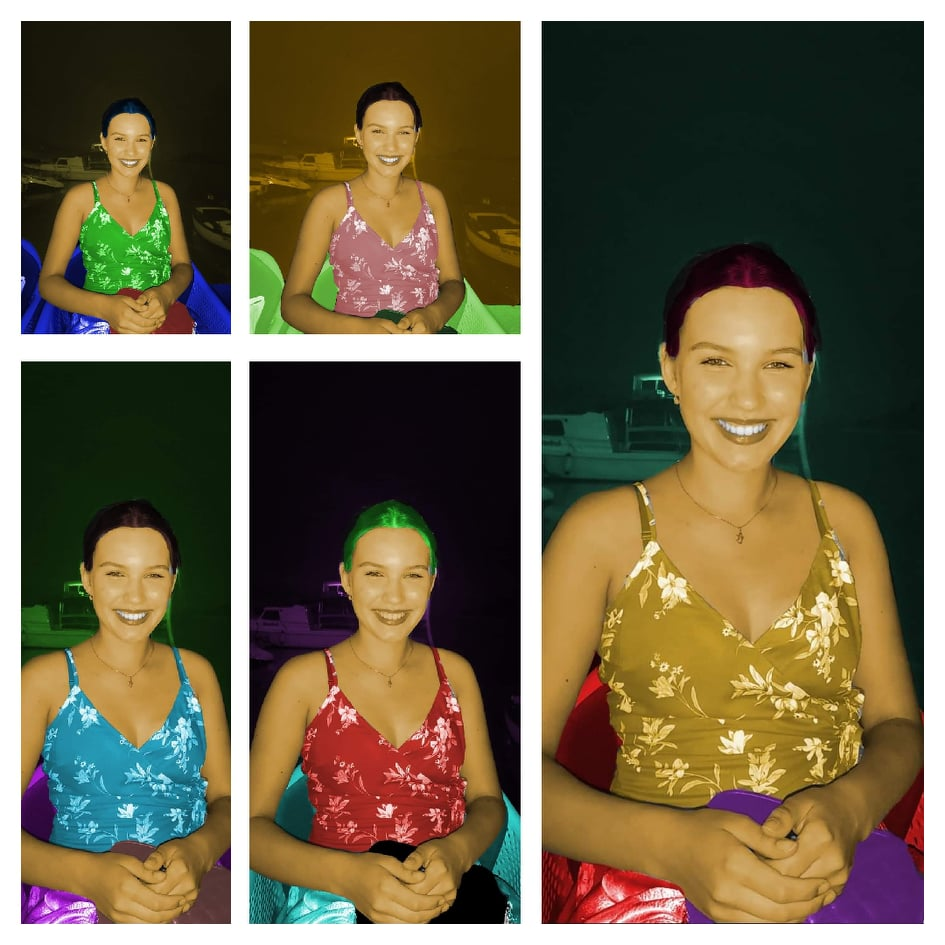
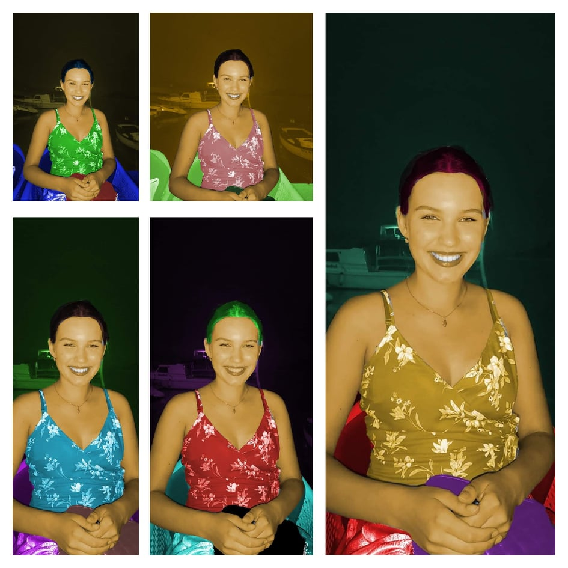

U programu Fontographer smo radili svoje fontove.

Keirala sam dvije vlastite krivulje čije su točke poravnate prema mreži koordinatnog sustava, definirala im boju i debljinu obruba te između njih napravila interpolaciju. Koristeći vlastiti font s prošle vježbe preko krivulja sam ispisala tekst vlastitih inicijala i od njih napravila masku
U Illustratoru sam kreirala svjetove koristeći se multipliciranjem elemenata nacrtanih alatom Pen,te elemente sam obojala, koristila sam i rotacije, scale, transparenciju, multipliciranje oblika.
U vježbi se obrađuje tema izrade složenih objekata koji se sastoje od više staza metodama spajanja (Unite/Compound path) ili oduzimanja oblika (Difference/Subtract). Apliciranje različitih vrsta gradijenata (linearni, radijalni, mesh) od dvije ili više boja. Transparencija i poredak slojeva u izradi složene grafike.
Ilustriran je pejsaž u Illustratoru koristeći elemente iz prijašnjih vježbi.

Retuširanje dviju slika.
 

Koloriranje slike.Selekcijom željenih dijelova slike stvaramo maske kojima skrivamo ili otkrivamo efekte kolorizacije. Boja se aplicira na zaseban sloj (layer) kako ne bismo uništili originalne tonove i kako bismo mogli lakše napraviti promjene u kasnijim fazama obrade slike.
Izrezivanje dijelova slike i lijepljenje u drugu sliku.

U ovom projektnom zadatku sam pronalazila slike interneta i koristila već ponuđene slike, izrezivala elemente i ubacivala ih u baznu sliku.

Ova vježba se bavi osnovama obrade video materijala i uvođenjem multimedije u video projekt. Rezultat vježbe će biti kinemagraf čija je karakteristika spajanje statične i pokretne slike.